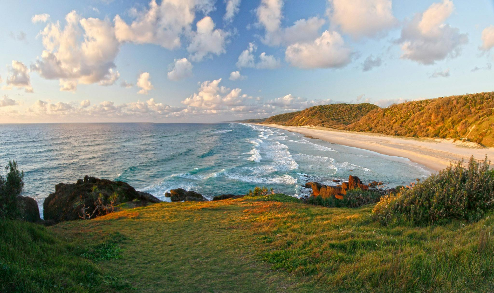
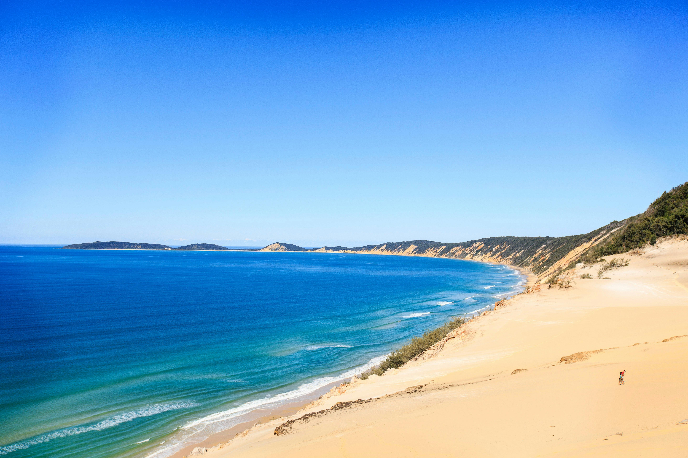
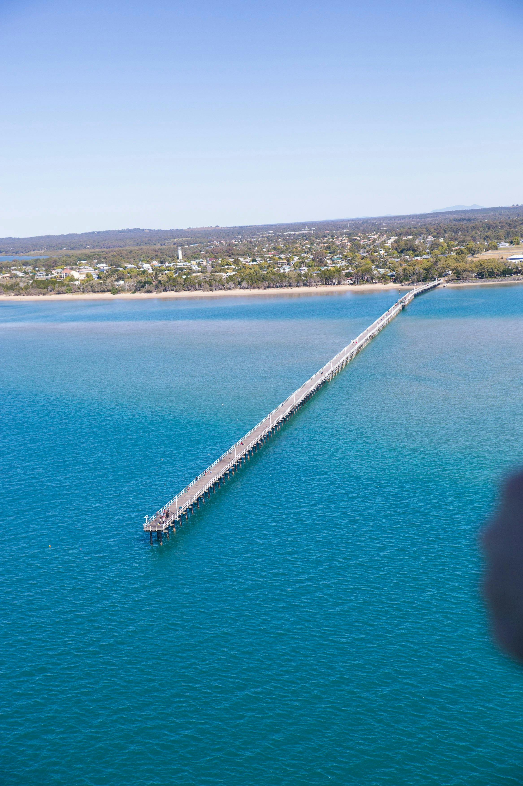
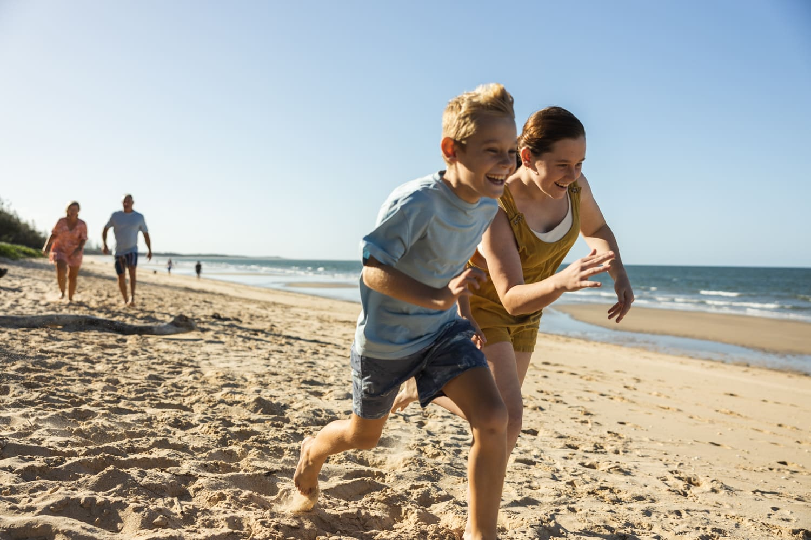
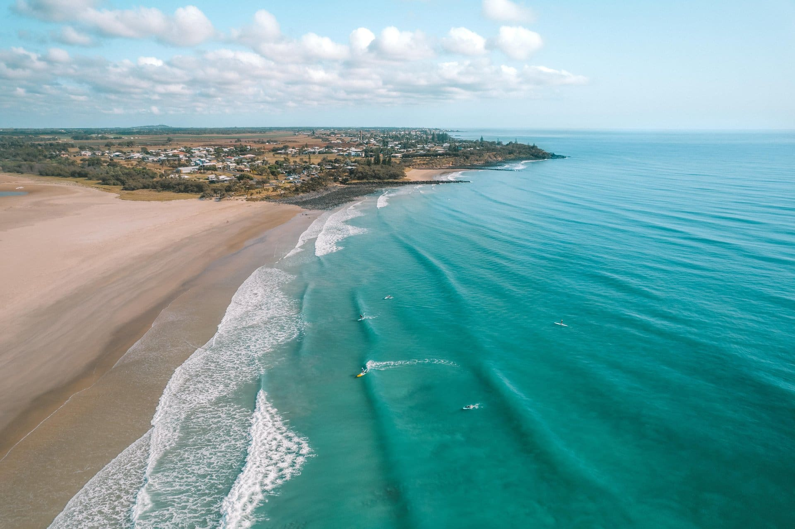
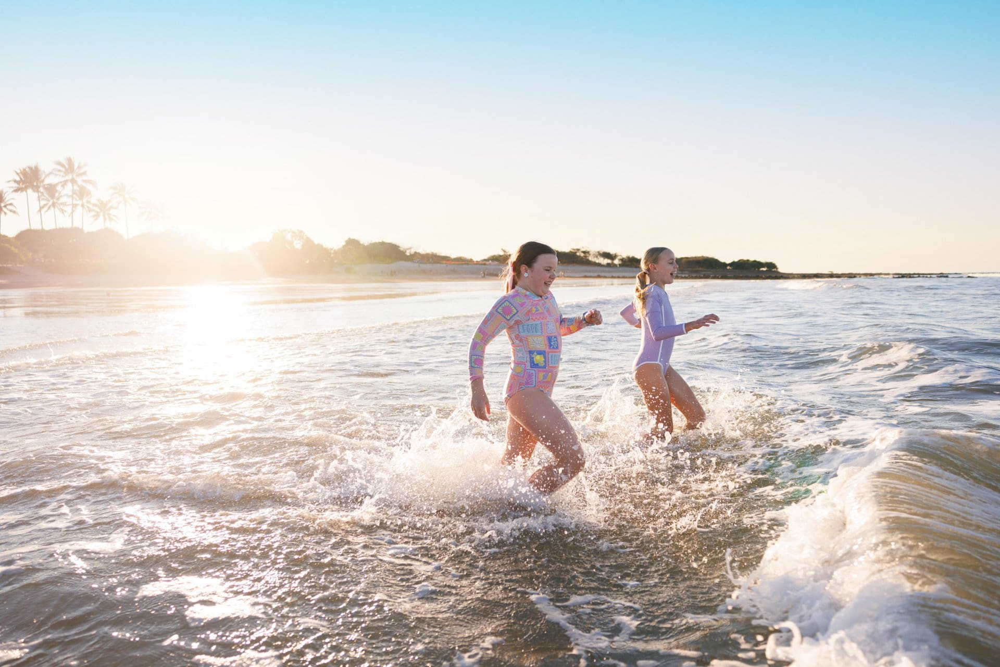

Cooloola · south of Fraser CoastDouble Island Point
Make a surf expedition of it. Reach this coastal headland by an organised 4WD tour or plan your own permitted beach-drive adventure.
Explore the point & access details ↗Chase a wave, catch the breeze or take the paddleboard. Explore six coastal stops around the Fraser Coast and its northern and southern neighbours.
6 coastal stops to explore

Cooloola · south of Fraser CoastMake a surf expedition of it. Reach this coastal headland by an organised 4WD tour or plan your own permitted beach-drive adventure.
Explore the point & access details ↗
Gympie region · southern detourBuild a stay around surf lessons, coastal walks and adventures beyond the coloured sands. Check the lesson location with your operator.
Explore Rainbow Beach ↗
Hervey Bay · Fraser CoastSwap the ocean break for the Bay. The waters near the pier are known for windsurfing and kitesurfing when conditions suit.
Discover Urangan ↗
Bundaberg region · northern detourSlow the pace along a long stretch of coast. Nearby Theodolite Creek offers a different kind of adventure by kayak or stand-up paddleboard.
Explore Woodgate & the creek ↗
Bundaberg region · northern detourRiver meets ocean, with wide sandbanks and a wind-sports following. Ask local operators about kitesurfing conditions and suitable launch areas.
Discover Elliott Heads ↗
Bundaberg region · northern detourA coastal breather between adventures. Explore the foreshore, find a café and make time for the beaches around Bargara.
Explore Bargara’s beaches ↗